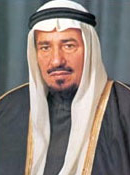
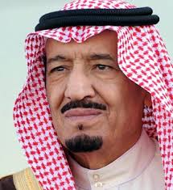

introduction
Saudi Arabia, officially the Kingdom of Saudi Arabia,is a country in Western Asia constituting the vast majority of the Arabian Peninsula. With a land area of approximately 2,150,000 km2 (830,000 sq mi), Saudi Arabia is geographically the largest sovereign state in Western Asia, the second-largest in the Arab world (after Algeria), the fifth-largest in Asia, and the 12th-largest in the world. Saudi Arabia is bordered by Jordan and Iraq to the north, Kuwait to the northeast, Qatar, Bahrain, and the United Arab Emirates to the east, Oman to the southeast and Yemen to the south; it is separated from Egypt and Israel in the north-west by the Gulf of Aqaba. Saudi Arabia is the only country with both a Red Sea coast and a Persian Gulf coast, and most of its terrain consists of arid desert, lowland, steppe and mountains. As of October 2018, the Saudi economy was the largest in the Middle East and the 18th largest in the world. Saudi Arabia also has one of the world's youngest populations, with approximately 50 percent of its population of 34.2 million being under 25 years old.
History Of SaudiArabia
Ibn Saud(King Abdulaziz Al Saud) was born on 15 January 1876 in Saudi Arabia’s capital city, Riyadh. He was the son of Abdul Rahman bin Faisal, the last ruler of the Second Saudi State. He was brought up under the stringent care of his father and a group of contemporary scholars were assembled to teach him the fundamentals of Islam. Early on began to show an impressive array of qualities and talents; shrewdness, courage, farsightedness and horsemanship. At 15, in 1890, the House of Saud’s long-term regional rivals, the Al Rashid conquered Riyadh. He, alongside his family took refuge with a Bedouin tribe in the southern desert of Saudi Arabia. Following this the Al Sauds moved to Qatar, Bahrain but later settled in Kuwait where they lived for over two decades. There he developed the necessary qualities for leadership. He made it his primary mission to restore the rule of his forefathers, no matter the cost. In the spring of 1901, he and alongside relatives, including half-brother Mohammed, set out on an invasion to regain control of the Kingdom previously lost by his father. The initial focus was Najd, targeting tribes associated with the Rashidis. As the raid proved profitable, it attracted more participants. The raiders’ numbers peaked at over 200, though these numbers dwindled over the ensuing months. In the autumn, the battalion made camp in the Yabrin oasis. While observing Ramadan, he devised a strategy to attack Riyadh and retake it from the Al Rashidi, the then ruling tribe. On the night of 15 January 1902, he led 40 men over the walls of the city and took the city. The Saudi victory marked the emergence of the Third Saudi State. Following the capture of Riyadh, many former supporters of the House of Saud rallied to join Ibn Saud. He was a charismatic leader, keeping his men supplied at all times with arms. Over the next two years, he and his forces recaptured almost half of the Najd from the Rashidis, exerting his military prowess over the opposing Arab tribes. In 1904, Ibn Rashid appealed to the Ottoman Empire (Turkish Empire) for military aid. The Ottomans responded by sending troops into Arabia to oppose the rising Ibn Saud. However, the newly joined Ottoman-Rashidi alliance was not enough for the brave leader and only postponed the inevitable. Ibn Saud began to wage guerrilla warfare against the Ottomans. With this strategy he was able to disrupt their supply routes and force a retreat. He accomplished his conquest of Najd and the eastern coast of Arabia in 1912. He then founded the Ikhwan, a military-religious brotherhood which assisted later in his conquests. In the same year, he instituted an agrarian policy to settle the nomadic pastoralist bedouins into colonies, and disband their tribal organizations in favour of allegiance to the Ikhwan. During World War I, the British government established diplomatic relations. Similar diplomatic missions were established with any Arabian power capable of unifying the region. The British entered into the Treaty of Darin, which made the lands of the House of Saud a British protectorate thus defining the boundaries of the developing Saudi state. In exchange, Ibn Saud pledged to again make war against Ibn Rashid, ally of the Ottomans. After Darin, he stockpiled the weapons and supplies which the British provided, including a ‘tribute’ of £5,000 per month. With this support he launched a campaign against the Al Rashidi; by 1922 they had been all but destroyed. The defeat of the Al Rashidi doubled the size of Saudi territory because after the war of Ha’il, king Abdulaziz sent his army to occupy Al-Jouf. This empowered Ibn Saud, giving him the leverage to negotiate a new more favorable treaty with the British. This treaty saw Britain recognize many of his territorial gains. In exchange, Ibn Saud agreed to recognize British territories in the area. In 1925, Ibn Saud captured the holy city of Mecca ending the 700 years of Hashemite rule. On 8 January 1926, the leaders of Mecca, Madina and Jeddah proclaimed Ibn Saud King of Hejaz. The British government then signed the Treaty of Jeddah abolishing the Darin protection agreement and recognized the independence of the Hejaz and Najd with Ibn Saud as its ruler. With recognition and support from many powerful nations, Ibn Saud continued to consolidate his power. By 1928, his forces had conquered most of the Arabian Peninsula. On 23 September 1932, Ibn Saud united his dominions into the Kingdom of Saudi Arabia, with himself as its king. Petroleum was discovered in Saudi Arabia in 1938. Through his advisers he granted substantial authority over Saudi oil fields to American oil companies much to the dismay of the British who had invested heavily in the House of Saud’s rise to power. Beginning in 1915, Ibn Saud signed the “friendship and cooperation” pact with Britain to keep his militia in line and cease any further attacks against their protectorates. His newfound oil wealth brought with it a great deal of power and influence. Ibn Saud established a position of neutrality during World War II, but was generally considered to favor the Allies. At the latter stages of the world war, Ibn Saud met significant political figures. One of these meetings was with the U.S. President Franklin Delano Roosevelt on 14 February 1945. The meeting laid down the basis of the future relations between two countries. The other meeting was with British Prime Minister Winston Churchill fifty miles south of Cairo, in February 1945. However, Saudis report that the meeting heavily focused on the Palestine problem and was unproductive in terms of outcomes, in contrast to Roosevelt meeting. While the members of the royal family desired flamboyant luxuries such as gardens, luxurious cars and palaces, Ibn Saud wanted a royal railway. This was to run from the Persian Gulf to Riyadh and then an extension to Jeddah. ARAMCO built the railway, at a cost of $70 million, drawn from the King’s oil royalties and was completed in 1951. After the kings death the railway was used commercially enabling Riyadh to grow into a modern and prosperous city. King Abdulaziz Al Saud passed away in the city of Taif in 1953. His body was transferred to Riyadh, where he was buried with his Al Saud ancestors. Although King Abdulaziz never traveled beyond the Arab world, he was a highly sophisticated statesman and respected worldwide for his leadership and accomplishments. Foreign leaders and diplomats commended his integrity and honesty. He was just as well known for keeping his promises, whether given to a simple Bedouin or to a world leader. These qualities enhanced his stature as a reliable and responsible leader dedicated to peace and justice.
Kings of Saudi Arabia
- King Abdulaziz ibn AbdulRhman
- King Saud ibn Abdulaziz
- King Fisal ibn Abdulaziz
- King Khaled ibn Abdulaziz 
- King Fahad ibn Abdulaziz
- King Abdullah ibn Abdulaziz
- King Salman ibn Abdulaziz 

Reign
| King's name | Reign Start | Reign End |
|---|---|---|
| Abdulaziz ibn AbdulRhman | 23 September 1932 | 9 November 1953 |
| Saud ibn Abdulaziz | 9 November 1953 | 2 November 1964 |
| Fisal ibn Abdulaziz | 2 November 1964 | 25 March 1975 |
| Khaled ibn Abdulaziz | 25 March 1975 | 13 June 1982 |
| Fahad ibn Abdulaziz | 13 June 1982 | 1 August 2005 |
| Abdullah ibn Abdulaziz | 1 August 2005 | 23 January 2015 |
| Salman ibn Abdulaziz | 23 January 2015 | Incumbent |